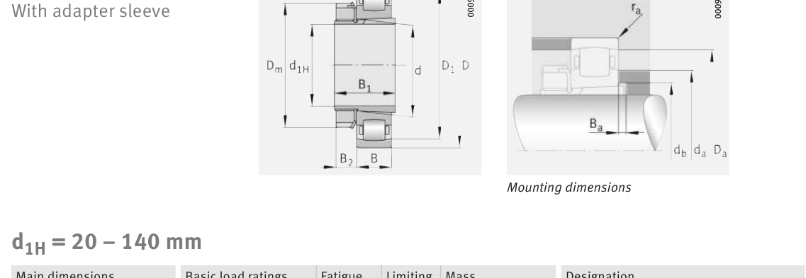

Original catalogue drawing - FAG Schaeffler HR 1, page 660

Scanned from the manufacturer catalogue page listing this part number. All part numbers printed on that table share the same drawing.
Scale cross-section
Blue = inner / outer ring, yellow = rolling element. Drawn to scale from this part's own
dimensions for selection reference only - not a manufacturing or assembly drawing.
Dimension table (mm / inch)
Symbol
Dimension
mm
inch
d
Bore diameter
55
2.1654
D
Outside diameter
100
3.937
B
Inner-ring / bearing width
21
0.8268
r
Chamfer (min)
1.5
0.0591
Notes
Weights are given in kg. Load ratings are shown in both the original catalogue units and the converted value (1 N = 0.2248 lbf). Data is provided for selection reference only - confirm against the latest official catalogue before ordering.
Main dimensions
Bore d (mm)
55
Outside dia. D (mm)
100
Width B (mm)
21
Inner-ring shoulder dia. D1 (mm)
89.2
Load ratings & speeds
Basic dynamic load rating Cr (lbs)
16636
Basic static load rating Cor (lbs)
19109
Basic dynamic load rating Cr (N)
74000
Basic static load rating C0r (N)
85000
Fatigue limit load Cur (N)
8700
Limiting speed nG (rpm)
7,100
Weight
Weight (kg)
0.642
Mounting dimensions (fillets / shoulders)
Housing fillet r max (mm)
1.5
Shaft shoulder da (mm)
68
Shaft shoulder db (mm)
60
Housing shoulder Da (mm)
91
Housing fillet ra max (mm)
1.5
Bearing life (ISO 281 basic rating life)
C / P
Equivalent load P (N)
L10 (106 rev)
L10h at 2,300 rpm
4
18,500
102
736
6
12,333
392
2,844
8
9,250
1,024
7,420
10
7,400
2,154
15,612
15
4,933
8,323
60,315
Basic rating life per ISO 281: L10 = (C/P)10/3 with C = 74,000 N. Hours = L10 x 106 / (60n). Life-modification factors for lubrication, contamination and temperature (aISO) are not included.
Source & traceability
Brand
FAG
Source catalogue
FAG / Schaeffler Rolling Bearings HR 1
Catalogue page
p.660 (dimensions)
Load ratings in newtons, fatigue limit load Cur, limiting speed nG and reference speed nB.
Send us the quantity you need and we will come back with price and
lead time, normally within 24 hours. Equivalent parts from other brands can be quoted at the same time.